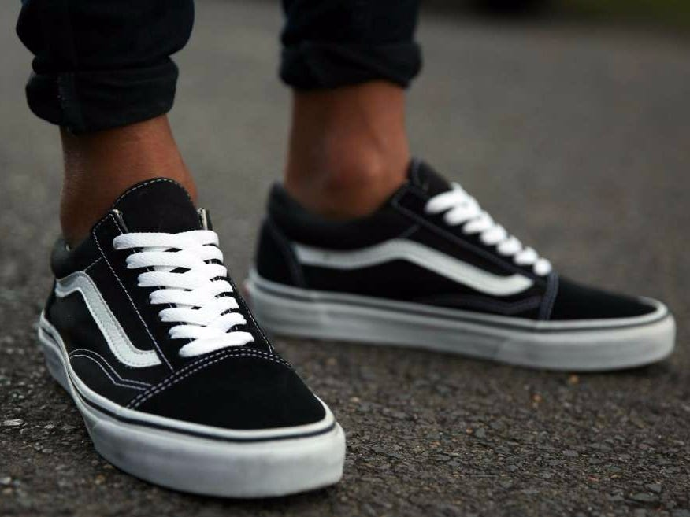
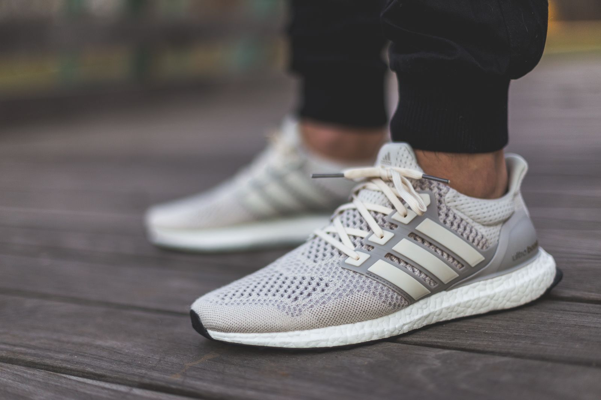

OM OSS
Footsquare grundades år 1999 av Erik Fagerlind och Peter Jansson. Båda växte upp i
Stockholm på 80- och 90-talet och ur deras gemensamma passion för sneakers och deras intresse för kulturen
växte en vänskap fram. Erik spelade basket under Michael Jordans era, och Peter sveptes med i den första hip
hop-vågen som slog in över Europa under tidigt 80-tal. Deras kärlek till sneakers ledde Peter till branschen
år -89 och Erik år -94. Med en stark gemenskap och tro på deras respektive styrkor, fortsatte de två
vännerna att hitta nya kreativa vägar till att imponera på sin inre tonåring genom att ge favoritsiluetter
ny form i otaliga samarbeten, öppna en bar i favoritstaden och designa nya favoritkollektioner, och så klart
lära känna nya vänner längs vägen.


